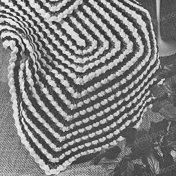

Click image for a larger view

Cockleshells - Free Crochet Afthan Pattern
MATERIALS:
Crocheted in popular shell stitch, this pretty afghan is worked in one piece, and is reversible.
COATS & CLARK'S "RED HEART" KNITTING WORSTED, 4 Ply (4 oz. "Tangle-Proof" Pull-Out Skeins): 9 skeins of No. 1 White; 4 skeins each of No. 760 Wine Rose and No. 835 Periwinkle.
Crochet Hook Size H.
Afghan measures 45 x 62 inches
GAUGE: 2 sc and 2 shells = 2 1/2 inches; 2 rnds = 1 inch.
Starting at center with White, ch 115 to measure 23 inches.
1st rnd: Sc in 3rd ch from hook, (ch 1, sc in next ch) twice; sc in next 108 ch, (ch 1, sc in next ch) twice; working along opposite side of starting chain, ch 1, sc in same ch as last sc, (ch 1, sc in next ch) twice; sc in next 108 ch, (ch 1, sc in next ch) twice. Join with sl st to first ch-2 sp.
2nd rnd: Ch 3, in same place as sl st make 2 dc, ch 1 and 3 dc - a starting shell made; sc in next ch-1 sp, in next ch-1 sp make 3 dc, ch 1 and 3 dc - shell made; skip next 3 sc, sc in next sc, (skip next 2 sc, shell in next sc, skip next 2 sc, sc in next sc) 17 times; skip next 3 sc, (shell in next ch-1 sp, sc in next ch-1 sp) twice; shell in next ch-1 sp, skip next 3 sc, sc in next sc, (skip next 2 sc, shell in next sc, skip next 2 sc, sc in next sc) 17 times; shell in next ch-1 sp, sc in next ch-1 sp. Join with sl st to top of starting ch-3. Break off and fasten. Turn. Hereafter pick up back loop only of each sc throughout.
3rd rnd: Attach Rose to the ch-1 sp of an end shell, ch 1, sc in same sp, in back loop of next sc make (dc, ch 1) 5 times and dc - an inc shell made. Mark the center sp of all inc shells; future inc shells will be made in line with them. (Sc in sp of next shell, shell in next sc) 18 times; (sc in sp of next shell, inc shell in next sc) twice; (sc in sp of next shell, shell in next sc) 18 times; sc in sp of next shell, inc shell in next sc. Join with sl st to front loop of first sc. Break off and fasten. Turn.
4th rnd: Attach Periwinkle to last joining, ch 3, in same place as sl st complete a starting shell same as on 2nd rnd, (sc in next ch-1 sp, shell in next sp) twice; sc in next ch-1 sp - corner made over inc shell; (shell in next sc, sc in next shell) 18 times; (shell in next sc, make a corner, as before, over inc shell) twice; (shell in next sc, sc in next shell) 18 times; shell in next sc, make a corner over inc shell. Join last sc to top of starting ch-3. Break off and fasten. Turn.
5th rnd: Attach White to ch-1 sp of any shell, ch 1, sc in same place, make a shell in each sc and sc in each shell around. Join, ch 3, turn.
6th rnd: Complete a starting shell in last joining, then work same as last rnd. Join, break off and fasten. Turn.
7th rnd: Attach Rose to the sp of the center shell on a narrow end, ch 1, sc in same place, * make a shell in each sc, sc in each shell to within the sc in line with marked sp on previous inc shell, make an inc shell in this sc - mark center sp. Repeat from * 3 more times; sc in sp of each shell, shell in each sc to end of rnd. Join, break off and fasten. Turn.
8th rnd: Attach Periwinkle to last joining, ch 3, complete a starting shell in same place, * sc in each shell, shell in each sc to within first sp of next inc shell, work a corner, same as on 4th rnd, in sps of inc shell. Repeat from * 3 more times; shell in each sc, sc in each shell to end of rnd. Join, break off and fasten. Turn. Repeat 5th through 8th rnd 10 more times; then repeat 5th and 6th rnds once more. Break off and fasten. Block to measurements.
Home